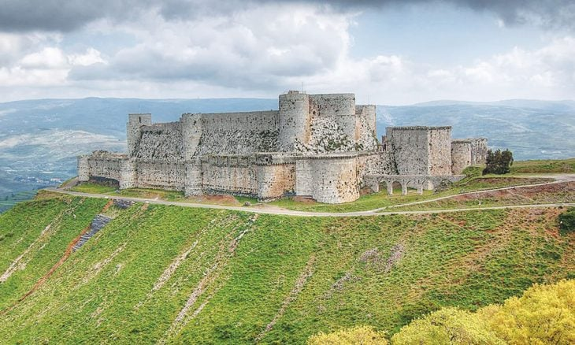
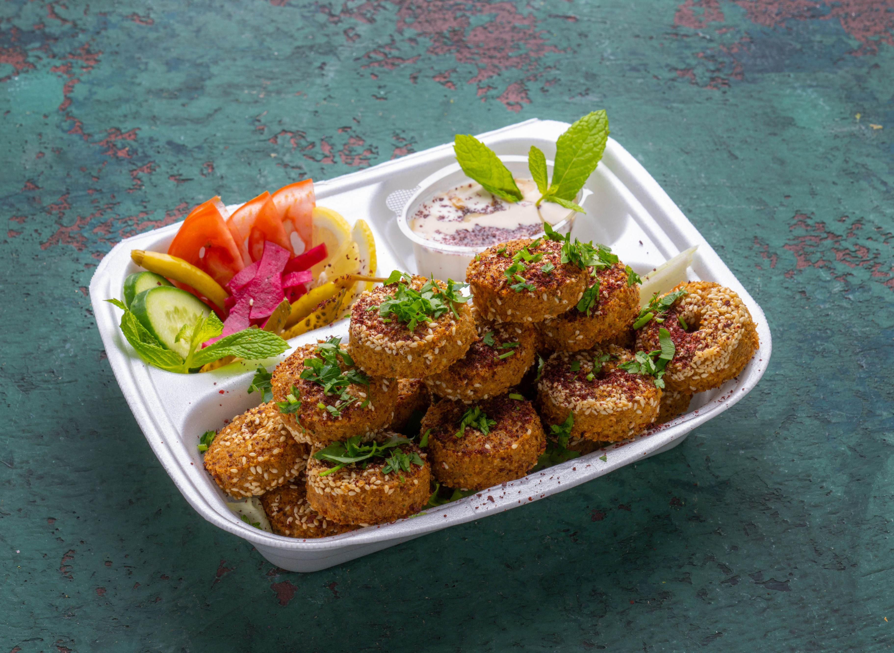

Suriye'nin Mirası

Hüsn Kalesi (diğer adıyla Krak des Chevaliers):
Tarihi ve Arkeolojik Miras
Hüsn Kalesi (diğer adıyla Krak des Chevaliers):
Suriye’nin batısında, Humus şehrine yakın,
stratejik bir tepe üzerinde yer alır.
Diğer Adları:Arapça: (Kalat el-Hısn)
Fransızca: Krak des Chevaliers
Türkçe anlamı: "Şövalyelerin Kalesi"
UNESCO Dünya Mirası Listesi'ne
2006 yılında dahil edilmiştir.
Dünyada en iyi korunmuş Haçlı kalelerinden biri
olarak kabul edilir.
Askeri mimarinin zirvesi olarak görülür.
Suriye'nin kültürel ve tarihi mirasının
en değerli örneklerinden biridir.

Selahaddin Kalesi: Lazkiye ilinin doğusunda,
ormanlık dağlık bir alanda yer alır.
Doğal olarak korunmuş bir kayalık üzerine kurulmuştur.
Kale, Bizans dönemine kadar uzanan
eski bir yerleşim üzerine inşa edilmiştir.
Bizans, Haçlı ve İslam mimarisinin birleşimi görülür.
Doğal kayalıkların içine işlenmiş yapı elemanları
dikkat çeker.
Kalede yazıtlar ve süslemeler de
mevcuttur.
Dini Miras
.jpeg)
Emevi Camii, Suriye’nin başkenti Şam’da bulunan
ve İslam tarihinin en önemli ve en eski camilerinden biridir.
Aynı zamanda "Şam Ulu Camii" olarak da bilinir.
.jpeg )
Halid Bin Velid Camii
Halkın Sidi Halid Camii olarak andığı Halid Bin Velid Camii
, Humus’un en önemli tarihî eserlerindendir.
Bugünkü cami 19. yüzyılda Osmanlı mimari tarzında yapılmıştır. 7. yüzyılda
İslam ordularının başında Suriye topraklarını fetheden komutan
Halid Bin Velid’e adanmış
13. yüzyıl eseri olan bir Memlük camisinin yerine inşa edildiği için
aynı isimle anılmıştır
. Halid Bin Velid'in türbesine de ev sahipliği yapan geniş bir ibadet
salonuna sahip caminin
İslam eserleri müzesi olarak kullanılan bir bölümü de vardır.

Falafel, Orta Doğu mutfağında (özellikle Lübnan ve Suriye mutfaklarında)